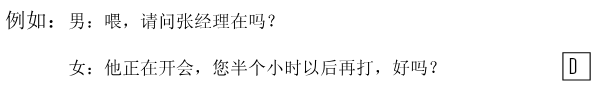
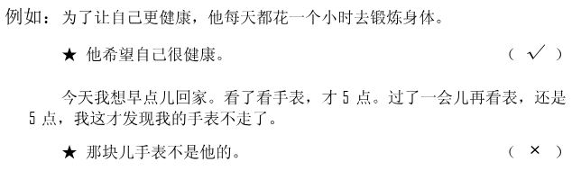
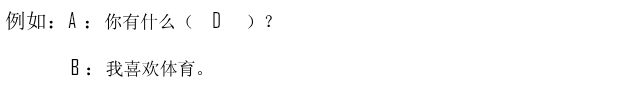

🎧 Phần nghe · Câu 1–40
Bấm phát để bắt đầu nghe. Thời gian làm bài bắt đầu khi bạn nghe hoặc chọn đáp án.
Nghe · Phần 1 · Câu 1–5
Nghe và chọn hình A–F phù hợp.

Nghe · Phần 1 · Câu 6–10
Nghe và chọn hình A–E phù hợp.
Nghe · Phần 2 · Câu 11–20
Nghe và chọn ✓ (đúng) hoặc × (sai).

Câu 11
★冬天水果很便宜。
Câu 12
★他现在还不能打篮球。
Câu 13
★儿子比爸爸矮。
Câu 14
★八月十五的月亮大。
Câu 15
★他现在住在公司附近。
Câu 16
★女儿喜欢小狗。
Câu 17
★老李第一次坐船。
Câu 18
★他在黑板上画熊猫。
Câu 19
★他的成绩不错。
Câu 20
★高兴的时候不会哭。
Nghe · Phần 3 · Câu 21–30
Nghe và chọn đáp án A, B hoặc C.

Câu 21
Câu 22
Câu 23
Câu 24
Câu 25
Câu 26
Câu 27
Câu 28
Câu 29
Câu 30
Nghe · Phần 4 · Câu 31–40
Nghe hội thoại và chọn đáp án A, B hoặc C.

Câu 31
Câu 32
Câu 33
Câu 34
Câu 35
Câu 36
Câu 37
Câu 38
Câu 39
Câu 40
Đọc · Phần 1 · Câu 41–45
Chọn câu A–F phù hợp để ghép với từng câu.
Đọc · Phần 1 · Câu 46–50
Chọn câu A–E phù hợp để ghép với từng câu.
Đọc · Phần 2 · Câu 51–55
Chọn từ A–F điền vào chỗ trống.
Đọc · Phần 2 · Câu 56–60
Chọn từ A–F điền vào chỗ trống của hội thoại.

Đọc · Phần 3 · Câu 61–70
Đọc đoạn văn và chọn đáp án đúng.

Câu 61
到了机场，他发现护照不见了，在行李箱里找了半天，也没找到，很着急。
★他为什么着急？
★他为什么着急？
Câu 62
人们经常说：“面包会有的，牛奶也会有的。”是的，如果努力，什么都会有的。
★这句话主要想告诉我们：
★这句话主要想告诉我们：
Câu 63
上个星期和朋友们去游泳，把我累坏了，到现在我的腿还在疼。看来我是应该多锻炼锻炼了。
★他打算：
★他打算：
Câu 64
越高的地方越冷，山路也越难走。但是不用担心，有我呢，我去年秋天爬过这个山，这儿我还是比较了解的。我饿了，我们先坐下来吃点儿饭、喝点儿水，然后再爬。一会儿我们可以从中间这条路上去。
★根据这段话，可以知道什么？
★根据这段话，可以知道什么？
Câu 65
“6月的天，孩子的脸，说变就变。”刚才还是大晴天，现在就要用伞了。雨越下越大，天也变得越来越黑，街上一辆出租车也打不到了。
★6月的天气：
★6月的天气：
Câu 66
看书时会遇到一些历史上的人或者国家的名字，这些字现在很多都不用了，想要知道它们的读音和意思，还需要词典的帮助，所以有本词典很方便。
★看书时会遇到：
★看书时会遇到：
Câu 67
过去人们喜欢看报纸，现在越来越多的人喜欢在电脑上看新闻。除了看新闻，人们还可以在网上听歌、看电影、买卖东西。
★上网后，人们可以：
★上网后，人们可以：
Câu 68
超市里一箱牛奶如果卖32.56元，也就是32块5角6分，那可能会带来许多不方便，因为现在人们的钱包里很少有“分”这么小的零钱。
★人们的钱包里很少有：
★人们的钱包里很少有：
Câu 69
每天睡觉前，女儿总会要求妈妈给她讲一个故事，开始的时候她听得很认真，慢慢地就睡着了。
★根据这段话，女儿：
★根据这段话，女儿：
Câu 70
那个地方很有名，蓝天，白云，绿草，很多人喜欢去那里旅游。我哥哥家就住在那儿，他们家旁边有一条小河，河边有高高的树，河里游着一种黄色的小鱼。
★那个地方怎么样？
★那个地方怎么样？
Viết · Phần 1 · Câu 71–75
Sắp xếp các từ đã cho thành câu hoàn chỉnh.
Phần viết được đối chiếu với đáp án mẫu; bỏ qua khoảng trắng và dấu câu. Điểm hiển thị là điểm luyện tập.

Câu 71
Câu 72
Câu 73
Câu 74
Câu 75
Viết · Phần 2 · Câu 76–80
Nhập chữ Hán phù hợp với pinyin vào từng ô trống.